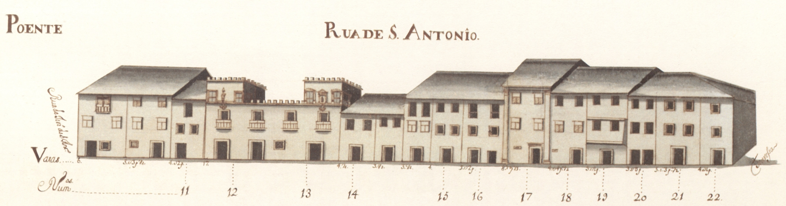

Rua de Sto. António - nascente

Rua de Sto. António - poente
Rua de Sto. António - nascente
Rua de Sto. António - poente
Pequena rua, que ligava a rua das Travessas com o Terreiro de Santo António . De raiz romana, não sabemos qual teria sido a sua função na cidade medieval.
Em 1465 são transferidos para aqui os judeus e instalados no prédio mais interessante que hoje aqui resta, e um dos mais estimáveis de toda a cidade, passando a ser denominada de Judiaria Nova . Esta casa veio depois a pertencer ao cónego João de Meira Carrilho , que lhe pôs as suas armas.
No final de quatrocentos, com a obrigação que os judeus sofreram de abjurar a sua religião passou a ser chamada de Sto. António, nome que se mantém.
Das 3 casas medievais que se vêem no alçado Nascente nada resta hoje infelizmente (uma já estava em adiantada ruína). Do lado Poente conservam-se algumas casas, ainda. É curioso notar que as suas construções têm um tipo de acabamento e proteção de janelas bem mais cuidado que a rua que lhe era sequente, a das Chagas.
Esta artéria, que felizmente ainda hoje conserva o seu traçado original, tinha 7 casas do lado Nascente e 15 do Poente, sendo 6 e 11, respectivamente, prazos do Cabido .

Rua de Sto. António

Rua de Sto. António
Enfiteuta: Francisco Soares de Novais, abade de S. Vicente do Bico
Foro: 290 reis e 2 galinhas
Descrição:
Enfiteuta: José da Cunda e Sousa
Foro: 1420 e 4 galinhas
Descrição:
Enfiteuta: Padre Miguel de Abreu
Foro: 170 reis e 6 galinhas
Descrição: Descrição não encontrada
Enfiteuta: Padre Miguel de Abreu
Foro: 90 reis e 2 galinhas
Descrição: Descrição não encontrada
Enfiteuta: Francisco Gonçalves Coudo, casado com Josefa Maria Madureira
Foro: 150 reis e 4 galinhas
Descrição:
Enfiteuta: Felícia Teresa, viúva de Luís de Barros
Foro: 300 reis e 2 galinhas
Descrição: Descrição não encontrada
Enfiteuta: António Coelho, abade de S. Martinho de Alvito
Foro: 410 reis
Descrição:
Enfiteuta: Os herdeiros de Miguel de Araújo Barreto, tenente
Foro: 350 reis e 2 galinhas
Descrição: Descrição não encontrada
Enfiteuta: Agostinho Marques do Couto, cónego
Foro: 1360 reis e 4 galinhas
Descrição:
Enfiteuta: Agostinho Marques do Couto, cónego
Foro: 350 reis e 2 galinhas
Descrição:
Enfiteuta: Padre Agostinho de Araújo Álvares
Foro: 240 reis e 2 galinhas
Descrição: Descrição não encontrada
Enfiteuta: Padre Agostinho de Araújo Álvares
Foro: 420 reis e 2 galinhas
Descrição: Descrição não encontrada
Enfiteuta: Os herdeiros de João Luís Moreira, boticário
Foro: 445 reis e 2 galinhas
Descrição: Descrição não encontrada
Enfiteuta: Os herdeiros de João Luís Moreira, boticário
Foro: 180 reis e 1 galinha
Descrição: Descrição não encontrada
Enfiteuta: Padre Manuel de Chaves
Foro: 430 reis e 2 galinhas
Descrição: Descrição não encontrada
Enfiteuta: António de Lima e Abreu
Foro: 220 reis e 2 galinhas
Descrição:
Enfiteuta: António de Lima e Abreu
Foro: 520 reis e 2 galinhas
Descrição:
Enfiteuta: António de Lima e Abreu
Foro: 440 reis e 2 galinhas
Descrição: